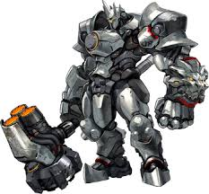

The tank catagory consits of 12 heroes being reinhardt, roadhog, sigma, orisa, mauga, winston, wreckingball, doomfist, D.V.A, ramattra, junkerqueen, and zarya

Reinhardt is a german soldier that fought the orisa units during the omnic war using his thruster propelled hammer and suit
Roadhog is an outcast from junkertown that fights using his shotgun, that can be used at long and short range, his hook, that he uses to pull people towards him, a stun trap, and his cannister to heal himself. He fights alongside Junkrat.
Sigma is a scientist that went crazy after an experiment gone wrong that caused him to gain control over gravity. He is currently under the influence of talon via mind control.
orisa is a robot used in the omnic crisis as part of the orisa unit that had a malfunction causing him to gain self awareness and caused him to join overwatch after seeing what was happening. He fights using his gun on his arm, his javelin, and his ability to harden himself.
Mauga is a hawaiian man that uses two miniguns, one that sets the target on fire and one that does more damage to enemies on fire. Little is known about his backstory.
Winston is a ape that was trained by Harold winston, a scientist that lived on the moon, and thanks to this winson gained high intelligance and was abnormally strong. He fights using his railgun, that can shoot a charged shot at long range or continously at short range, and if his glasses are broken or he takes them off he enters a rage mode, slapping people around.
Wreckingball is a hampster that was also trained by Harold winston and gained high intelligance. He fights using his mech that can shoot from its chainguns, turn into a ball, grapple around while in the ball state, and also contains floating land mines.
Doomfist is a man that lost his arm during the omnic war and got it replaced by a giant metal arm through his families prosthetics company. His abilities include shooting from his right hand, blocking using energy with his left hand, a ground pound, and launching himself into the sky. He is also a member of talon.
Dva is a korean fighter who uses her mech to fight off the omnics. Her weaponset includes rotating shotguns for arms, thrusters, micro missles, a energy barrier, and it is able to self destruct.
Ramattra is a omnic that survived the first omnic crisis and is the leader of the omnic war against humanity for, in his eyes, mistreating the omnics. His skillset includes a staff with a particle accelerator to shoot and enemies, a device that forces enemies over it to the ground, a barrier, a brawler form, and is able to use a device that enables a damaging area around him.
Junkerqueen, like roadhog and junkrat, hails from junkertown however, unlike those two, she isn't exiled but instead she was actually the one who exiled the two. Her weapons include a shotgun, her knife, gracie, that causes short lasting after effects to those harmed by it and causes them to be unable to be healed for a short time, and her axe, carnage.
Zarya is a russian fighter that uses a partical cannon to shoot a laser at her enemies, fire a condensed ball that explodes on impact, and is able to create a mini black hole that brings all enemies to it. Little is known about her backstory.